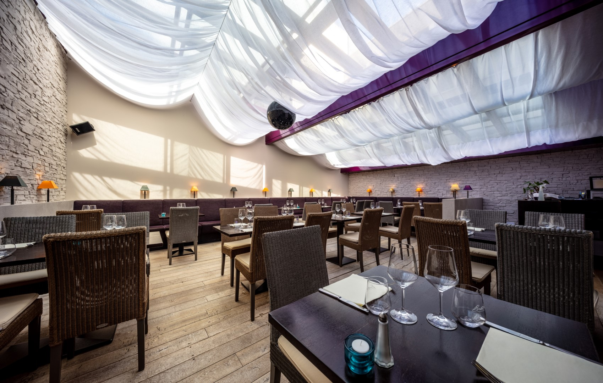
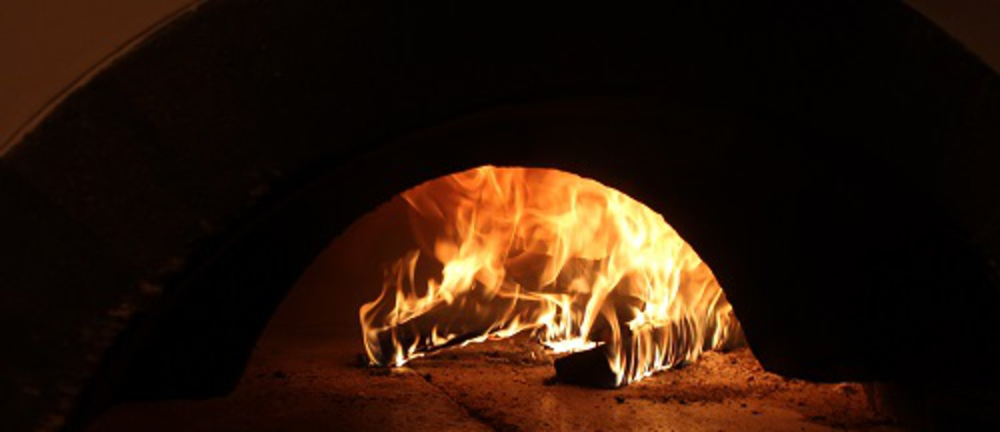
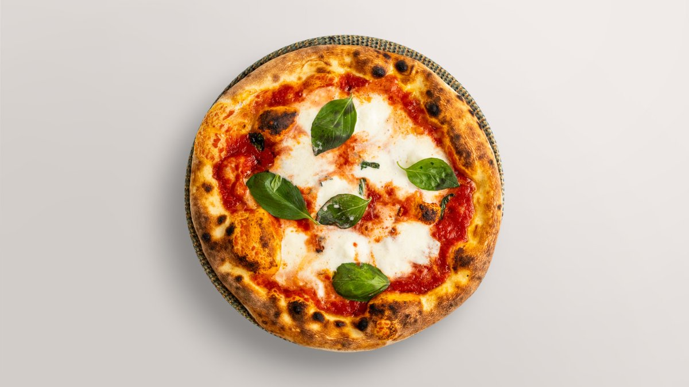
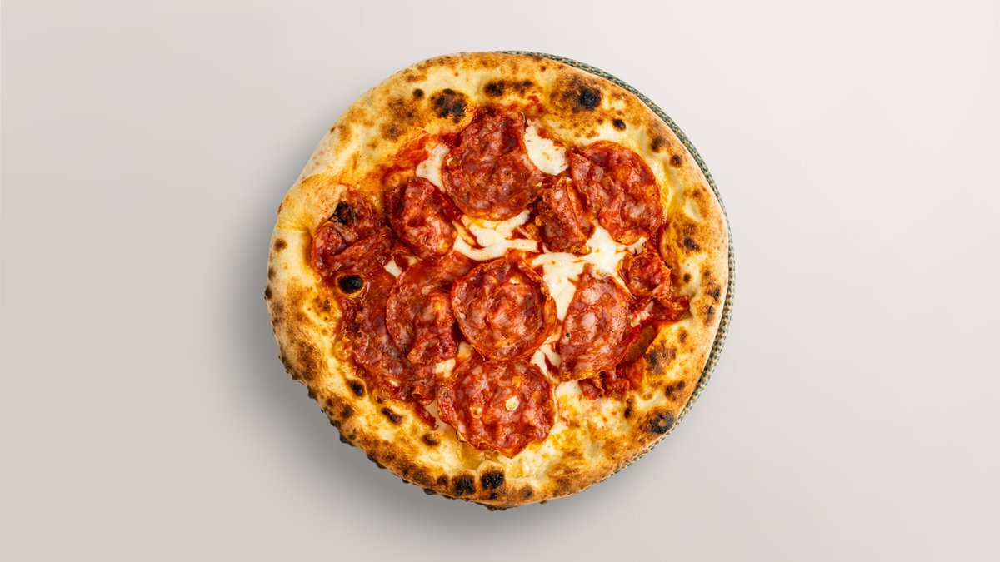
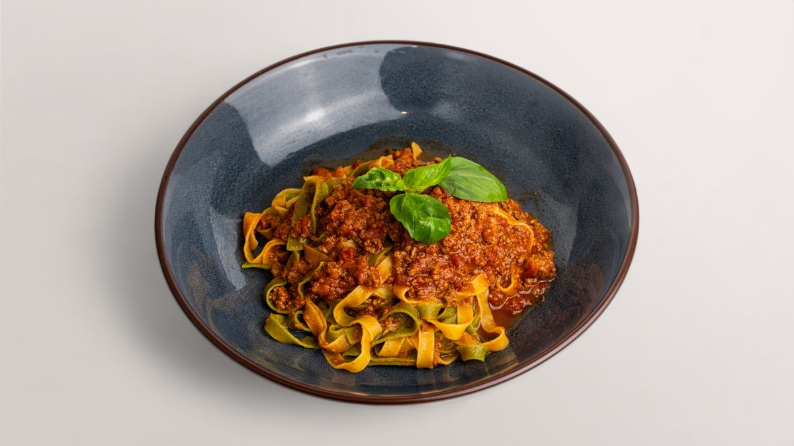
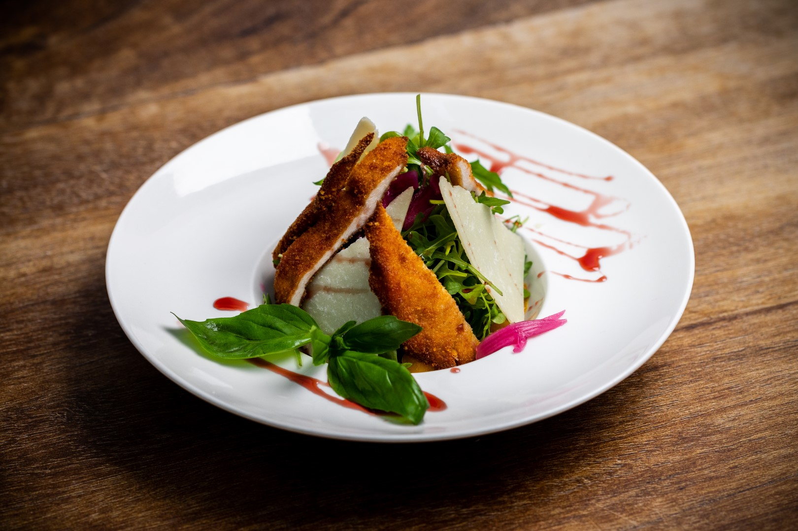
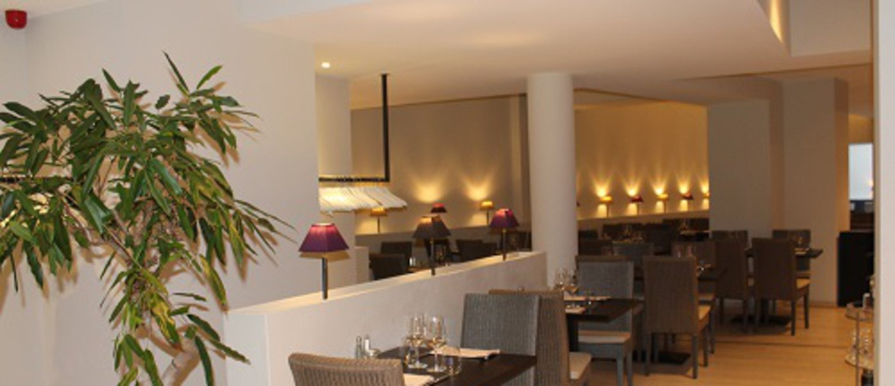

Luxembourg · Glacis & Louvigny
L'Italie, comme à la maison.
Cuisine familiale des régions d'Italie, pizzas au feu de bois et pâtes fraîches — préparées devant vous. « Rien comme tout le monde. »






Sélection de nos incontournables. Carte complète et prix à confirmer avec l'établissement.
Insalate · Risotti · Gratinati · Pizze Bianche · Poissons · Viandes — une carte généreuse aux accents des régions italiennes, avec une touche française.
Voir la carte en ligneLa pause déjeuner des quartiers d'affaires : une formule rapide, servie sans compromis sur la qualité. Sur place, à emporter ou en livraison.
Horaires indicatifs — à confirmer avec l'établissement.

Le Glacis accueille vos événements jusqu'à ~110 convives : plusieurs espaces, une véranda vitrée rétractable et un service attentif pour mariages, anniversaires et repas d'entreprise.